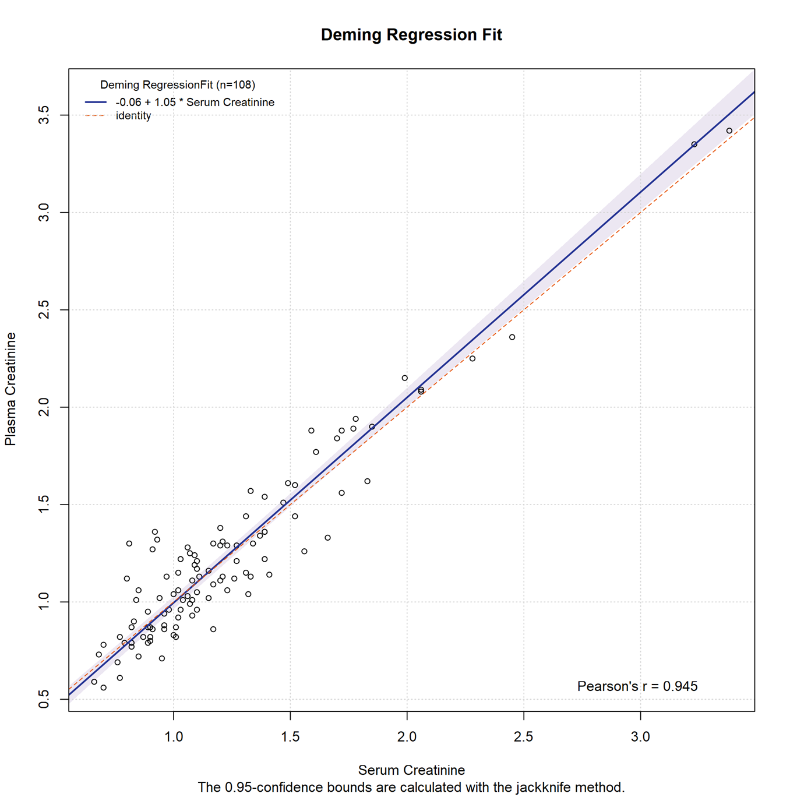

Method Comparison Regression
Menu location: Analysis_Agreement_Method Comparison Regression.
This function compares two methods of measurement using linear regression techniques that can accommodate errors in both dimensions (test method Y vs. reference method X).
Two main types of regression are offered: Deming and Passing-Bablok.
Deming regression is an extension of simple linear regression to handle random measurement errors in X as well as Y variables (Cornbleet & Gochman, 1979). So Deming regression considers both X and Y to be subject to measurement error whereas simple regression allows only the Y variable to be measured with error. The X and Y variables in Deming regression may contain repeated measurements or may be single measurements from each subject. You should not use this method with small samples (less than 40).
Deming regression can accommodate differences in measurement errors between the test and reference methods. The default procedure assumes no difference, in other words an "error ratio" of 1. If there is a difference then change this value to the variance ratio between the methods (see F test).
If the differences between the test and reference observations tend to be different with higher or lower values of the factor being measured then the data are heteroscedastic. In this case a Deming regression breaks an important linear regression assumption about the distribution of residuals. To overcome this problem a weighted Deming regression is offered, using weights equal to the reciprocal of the square of the reference value - which is more robust to heteroscedasticity.
Where Deming regression expects errors to be from a normal distribution, Passing-Bablok regression is a non-parametric method that does not make any assumptions about the distributions of the samples or their measurement errors (Passing and Bablok, 1983). The method does, however, assume the two variables are highly correlated and have a linear relationship.
Different methods for calculating confidence intervals are offered. For Deming and weighted Deming regression Linnet (1993) recommends the jackknife (leave one out resampling) method. For Passing-Bablok regression a nested bootstrap (bias corrected and accelerated) interval is preferred, but this can take a very long time with large datasets, where an approximate Passing-Bablok procedure may be more practical. The bootstrap intervals are calculated from random re-samples of the data: the seed of the random numbers is filled in from the clock and can be changed, and the results show it, so that the same re-samples can be drawn again.
If the confidence interval for the slope does not contain the value 1 then you reject the null hypothesis that the slope is equal to 1 - in other words there is statistically significant evidence of at least a proportional difference between the two methods.
If the confidence interval for the intercept does not contain the value 0 then you reject the null hypothesis that the intercept is equal to 0 - in other words there is statistically significant evidence that the methods differ by at least a constant amount.
A scatter plot is given with each regression by default, showing the fitted regression line with a confidence interval, the identity line (methods equal) and the regression equation. This plot enables you to see the observations and how well the methods of measuring them agree, with the disagreement reflecting the bias and likely range of bias.
You can select a residual plot, which is useful for spotting outliers and non linear patterns, and for checking how the agreement varies over the range of measurement.
You can also select a Bland-Altman agreement plot displaying differences vs. means within standard limits of agreement.
Technical Validation
StatsDirect produces a R script to execute these methods via the MCR package developed by E. Manuilova, A. Schuetzenmeister and F. Model at the pharmaceutical company Roche.
Source: cran.r-project.org/web/packages/mcr/
Standard: The MCR package implements the Clinical Laboratory and Standards Institute guidance EP09-A2 (Method Comparison and Bias Estimation Using Patient Samples; Approved Guideline – Second Edition.).
Further analysis in R: You can choose to save the intermediate R script to your StatsDirect report. You can then run supplementary analyses. For example to estimate the bias and confidence interval at a given series of measurement levels (1 to 5) you could run the command calcBias(model1,x.levels=c(1,2,3,4,5)) for absolute bias or calcBias(model1,x.levels=c(1,2,3,4,5),type="proportional") for proportional bias. calcCUSUM(model1) will give a cumulative sum test with which you can assess linearity.
Example
From MCR R package.
Data: Test workbook (Agreement worksheet: Plasma Creatinine, Serum Creatinine).
To run this example in StatsDirect: select the menu item (Analysis_Agreement_Method Comparison Regression); when asked to "Select Data for Test Method" highlight the Plasma Creatinine column of the Agreement worksheet in the Test workbook (test.xlsx) and right click on the mouse to select the data; when asked for the "Reference Method" choose Serum Creatinine in the same way; when presented with options select Regression Method: Deming and Charts: Test vs. Reference.
Method Comparison Regression
Test method: Plasma Creatinine
Reference method: Serum Creatinine
Sample size: 108
Error ratio: 1
Deming (jackknife CI):
| Estimate | Standard Error | 95% CI | Meaning | ||
| Slope: | 1.054539 | 0.024883 | 1.005207 to 1.103872 | Proportional differences | |
| Intercept: | -0.058913 | 0.034375 | -0.127066 to 0.009239 | Systematic differences | |

 R code
R code
This R code reproduces the example above. It uses the mcr package, which StatsDirect itself runs for this analysis, and the package's own creatinine data; install the package first with install.packages("mcr"). It was checked with R 4.6.1 and mcr 1.3.3.1.
# Method comparison regression: the StatsDirect help example (the creatinine data of
# the mcr package, serum and plasma creatinine in 108 subjects; the test workbook's
# Agreement worksheet columns Serum Creatinine and Plasma Creatinine hold the same
# pairs) in R. StatsDirect runs this analysis through the mcr package, so install it
# first with install.packages("mcr")
if (!requireNamespace("mcr", quietly = TRUE)) install.packages("mcr", repos = "https://cloud.r-project.org")
library(mcr)
data(creatinine)
complete <- complete.cases(creatinine)
serum <- creatinine$serum.crea[complete]
plasma <- creatinine$plasma.crea[complete]
# Deming regression of the test method (plasma) on the reference method (serum) with
# an error ratio of 1, its standard errors and confidence intervals from Linnet's
# jackknife: the package's summary, then its coefficient table to 6 places
fit <- mcreg(serum, plasma, error.ratio = 1, method.reg = "Deming",
method.ci = "jackknife", mref.name = "Serum Creatinine",
mtest.name = "Plasma Creatinine")
invisible(printSummary(fit))
six <- function(x) formatC(x, digits = 6, format = "f", drop0trailing = TRUE)
est <- getCoefficients(fit)
cat("Sample size:", length(serum), "\n")
for (term in c("Slope", "Intercept")) {
cat(paste0(term, ":"), six(est[term, "EST"]), six(est[term, "SE"]),
six(est[term, "LCI"]), "to", six(est[term, "UCI"]), "\n")
}
# The same arithmetic without the package. With an error ratio of 1 the Deming line
# is the orthogonal regression, from the sums of squares and products about the
# means. The jackknife refits the line leaving each pair out in turn; the standard
# error is that of the pseudo-values n b - (n - 1) b(-i) over root n, and the limits
# use t on n - 2 degrees of freedom (Linnet 1993)
deming <- function(x, y) {
sxx <- sum((x - mean(x))^2)
syy <- sum((y - mean(y))^2)
sxy <- sum((x - mean(x)) * (y - mean(y)))
b <- (syy - sxx + sqrt((syy - sxx)^2 + 4 * sxy^2)) / (2 * sxy)
c(Intercept = mean(y) - b * mean(x), Slope = b)
}
n <- length(serum)
whole <- deming(serum, plasma)
left_out <- t(sapply(1:n, function(i) deming(serum[-i], plasma[-i])))
pseudo <- n * rep(whole, each = n) - (n - 1) * left_out
se <- apply(pseudo, 2, sd) / sqrt(n)
for (term in c("Slope", "Intercept")) {
cat(paste0(term, ":"), six(whole[term]), six(se[term]),
six(whole[term] - qt(0.975, n - 2) * se[term]), "to",
six(whole[term] + qt(0.975, n - 2) * se[term]), "\n")
}
# The report's plot: the test method against the reference method with the Deming
# line, its confidence band and the line of identity
plot(fit, x.lab = "Serum Creatinine", y.lab = "Plasma Creatinine")